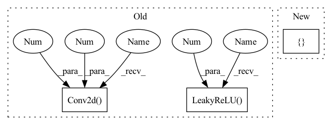

Pattern ID :1132
Before Change
nn.LeakyReLU(0.2, inplace=True),
),
nn.Sequential(
nn.utils.weight_norm(nn.Conv2d(64 , 128 , kernel_size=(5, 1), stride=(3, 1)) ),
nn.LeakyReLU(0.2 , inplace=True) ,
),
nn.Sequential(
nn.utils.weight_norm(nn.Conv2d(128, 256, kernel_size=(5, 1), stride=(3, 1))),After Change
inp = 1
for l in range(4):
out = int(2 ** (5 + l + 1))
layer += [
nn.utils.weight_norm(nn.Conv2d(inp, out, kernel_size=(5, 1), stride=(3, 1))),
nn.LeakyReLU(0.2)In pattern: SUPERPATTERN
Frequency: 4
Non-data size: 3
Instances Fragment ID: 3294514
Project Name: coqui-ai/tts
Commit Name: c20a6b118555830d16437d294cc328f7e715fa32
Time: 2021-04-08
Author: rishikksh20@gmail.com
File Name: TTS/vocoder/models/multi_period_discriminator.py
M Class Name: PeriodDiscriminator
N Class Name: PeriodDiscriminator
M Method Name: __init__(2)
N Method Name: __init__(2)
M Parent Class: nn.Module
N Parent Class: nn.Module
M File Name: TTS/vocoder/models/multi_period_discriminator.py
N File Name: TTS/vocoder/models/multi_period_discriminator.py
M Start Line: 11
M End Line: 33
N Start Line: 9
N End Line: 24
Before Change
class UnetDown(nn.Module):
def __init__(self, in_size, out_size, normalize=True, dropout=0.0):
super(UnetDown, self).__init__()
layers = [nn.Conv2d( in_size, out_size, 4 , 2, 1 , bias=False) ]
if normalize:
layers.append(nn.InstanceNorm2d(out_size))
layers.append(nn.LeakyReLU(0.2 ) )
if dropout:
layers.append(nn.Dropout(dropout))
self.model = nn.Sequential(*layers)After Change
class UnetDown(nn.Module):
def __init__(self, in_size, out_size):
super(UnetDown, self).__init__()
layers = [ Conv3(in_size, out_size), nn.MaxPool2d(2) Fragment ID: 3294498
Project Name: cloneofsimo/mindiffusion
Commit Name: c84221717042f2235d39ab9be621950aa55208f2
Time: 2022-04-15
Author: cloneofsimo@gmail.com
File Name: mindiffusion/unet.py
M Class Name: UnetDown
N Class Name: UnetDown
M Method Name: __init__(3)
N Method Name: __init__(5)
M Parent Class: nn.Module
N Parent Class: nn.Module
M File Name: mindiffusion/unet.py
N File Name: mindiffusion/unet.py
M Start Line: 10
M End Line: 18
N Start Line: 29
N End Line: 31
Before Change
// Upsampling convolutional layer.
self.upsampling = nn.Sequential(
nn.Conv2d(64 , 64 , (3, 3), (1, 1), (1, 1)) ,
nn.LeakyReLU(0.2 , True)
)
// Reconnect a layer of convolution block after upsampling.
self.conv3 = nn.Sequential(After Change
)
// Upscale block
upsampling = []
for _ in range(2):
upsampling.append(UpsampleBlock(64))
self.upsampling = nn.Sequential(*upsampling)
Fragment ID: 3294515
Project Name: lornatang/esrgan-pytorch
Commit Name: a9031d71f6f27449fe63ec703344577e35fa87cb
Time: 2022-04-15
Author: liuchangyu1111@gmail.com
File Name: model.py
M Class Name: Generator
N Class Name: Generator
M Method Name: __init__(1)
N Method Name: __init__(1)
M Parent Class: nn.Module
N Parent Class: nn.Module
M File Name: model.py
N File Name: model.py
M Start Line: 149
M End Line: 173
N Start Line: 120
N End Line: 147
Before Change
),
nn.Sequential(
nn.utils.weight_norm(nn.Conv2d(64, 128, kernel_size=(5, 1), stride=(3, 1))),
nn.LeakyReLU(0.2 , inplace=True) ,
),
nn.Sequential(
nn.utils.weight_norm(nn.Conv2d(128 , 256 , kernel_size=(5, 1), stride=(3, 1)) ),
nn.LeakyReLU(0.2, inplace=True),
),
nn.Sequential(After Change
inp = 1
for l in range(4):
out = int(2 ** (5 + l + 1))
layer += [
nn.utils.weight_norm(nn.Conv2d(inp, out, kernel_size=(5, 1), stride=(3, 1))),
nn.LeakyReLU(0.2) Fragment ID: 3294512
Project Name: coqui-ai/tts
Commit Name: c20a6b118555830d16437d294cc328f7e715fa32
Time: 2021-04-08
Author: rishikksh20@gmail.com
File Name: TTS/vocoder/models/multi_period_discriminator.py
M Class Name: PeriodDiscriminator
N Class Name: PeriodDiscriminator
M Method Name: __init__(2)
N Method Name: __init__(2)
M Parent Class: nn.Module
N Parent Class: nn.Module
M File Name: TTS/vocoder/models/multi_period_discriminator.py
N File Name: TTS/vocoder/models/multi_period_discriminator.py
M Start Line: 11
M End Line: 33
N Start Line: 9
N End Line: 24
Before Change
dim_in = 2**14 // img_size
blocks = []
blocks += [nn.Conv2d(3 , dim_in, 3 , 1, 1) ]
repeat_num = int(np.log2(img_size)) - 2
for _ in range(repeat_num):
dim_out = min(dim_in*2, max_conv_dim)
blocks += [ResBlk(dim_in, dim_out, downsample=True)]
dim_in = dim_out
blocks += [nn.LeakyReLU(0.2 ) ]
blocks += [nn.Conv2d(dim_out, dim_out, 4, 1, 0)]
blocks += [nn.LeakyReLU(0.2)]
blocks += [nn.Conv2d(dim_out, config["n_classes"], 1, 1, 0)]After Change
self.config = config
self.n_filters = 64
layers = []
for i in range(4):
in_channels = self.n_filters * (2 ** (i - 1)) if i > 0 else 3
out_channels = 2 * in_channels if i > 0 else self.n_filters
Fragment ID: 3294480
Project Name: avivga/overlord
Commit Name: cd6226565b0cb3d4ca065160d7f47c976ea9e5d4
Time: 2020-05-23
Author: avivga@gmail.com
File Name: model/modules.py
M Class Name: Discriminator
N Class Name: Discriminator
M Method Name: __init__(2)
N Method Name: __init__(3)
M Parent Class: nn.Module
N Parent Class: nn.Module
M File Name: model/modules.py
N File Name: model/modules.py
M Start Line: 188
M End Line: 210
N Start Line: 192
N End Line: 205